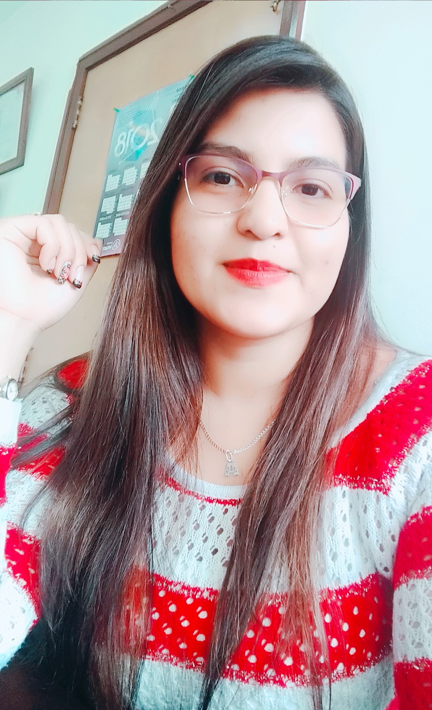

CURRICULUM VITAE MARIA ALEJANDRA RUIZ RUBIO
D A T O S P E R S O N A L E S
- Nombre completo: Maria Alejandra Ruiz Rubio
- Fecha de nacimiento: 30/12/1992
- Lugar de nacimiento: Ibagué Tolima
F O R M A C I Ó N A C A D É M I C A
- 2011-2016:Fundacion Universidad Autonoma de Colombia
- Relaciones Economicas Internacionales
- 1952-1956: Secundario Gotham
- Bachiller con especialización en trucos
E X P E R I E N C I A L A B O R A L
- 1975-1985: Desocupado
- Sin trabajo porquer se me rompió el batimovil
- 1965-1975: Cazavillanos y demás chusma
- Atrapé a Gatubela a joker a Victor Fries lo dejé porque se me congeló la capa
- 1962-1965: Aprendiz de superhéroes
- Hice pasantía con Superman. Opté por usar mascara porque no pude aprender a peinarme el rulo